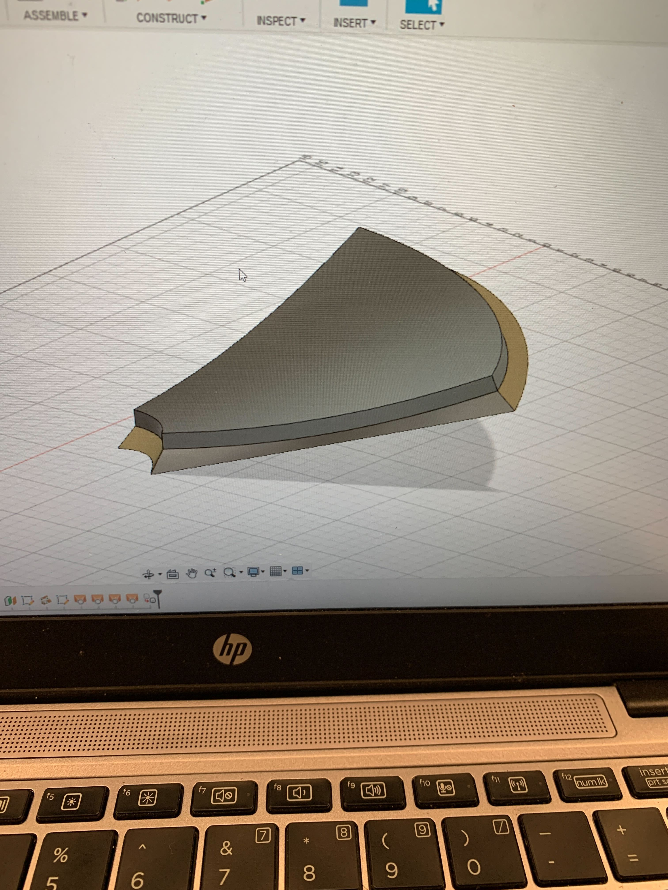
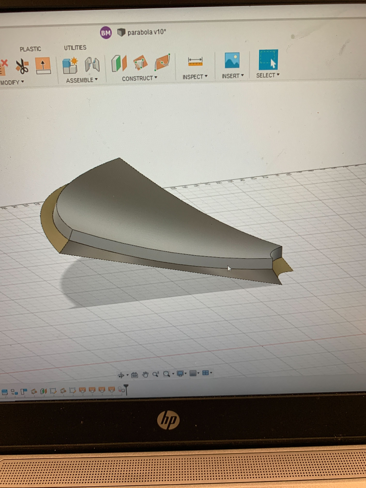
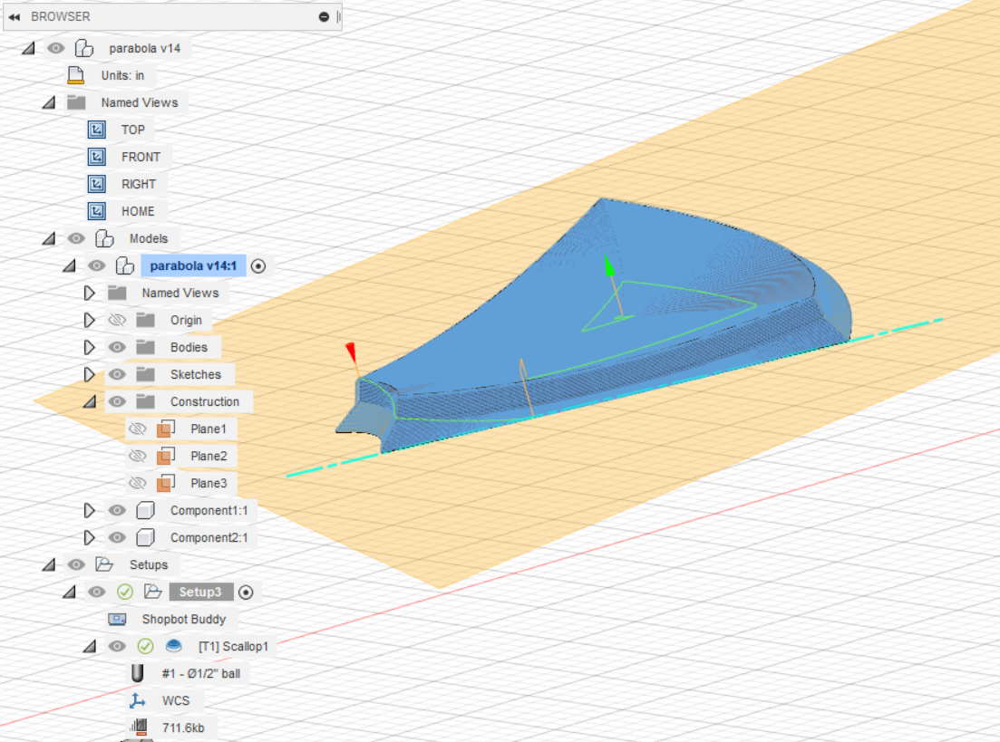

### Week 12: Parabolic Reflector Design
This week, we continued on our design for the parabolic reflector dish for the solar cooker. Since we are dividing the dish into 6 sections, I focused mainly on prepping one such section in CAD to be machined, and then thermoformed. Since the thermoformer will not operate properly on our model unless there is some draft angle on the object of at least 5 degrees, I created an angled section at the bottom of the piece.


This angled piece on the bottom will allow the thermoformer to stretch the plastic film over the dish, give us the desired shape as well as the desired overhangs that can then be trimmed and attatched to one another after each section is made.
The next thing we did with this dish is set up the toolpaths in Fusion360 neccesary for machining the dish out of our desired material

This is a video preview of what the machining of the dish section will look like.
<video controls>
<source src="./paratoolpath.mp4" type="video/mp4">
</video>
Our next steps will be finding/deciding on what the best material for our dish section will be. We will need to consider availability, as well as how durable the material is, so as to avoid any warping or deformations during the thermoforming process.
And here is a [link to the home page](../index.html).